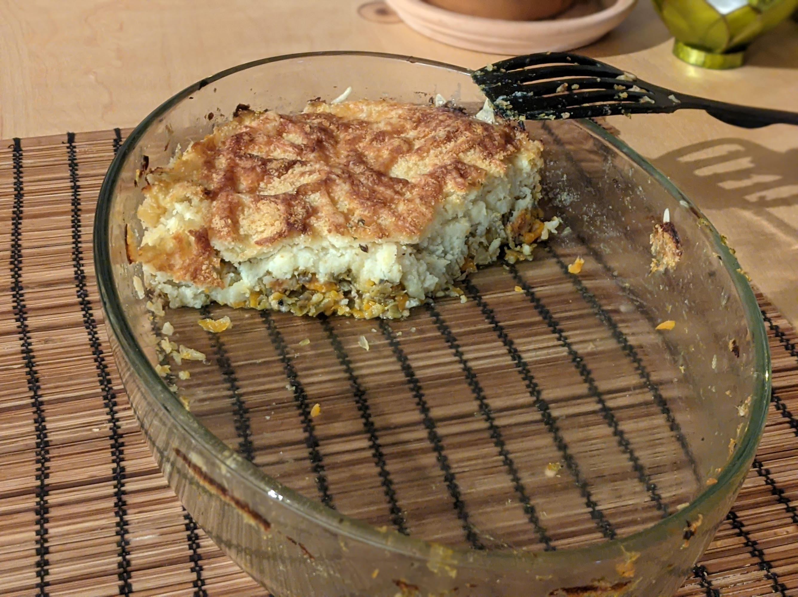

Hachis parmentier végétarien

Pour 5 personnes :
- Une dizaine de belles pommes de terre
- Deux branches de céleri
- Trois carottes
- Une poignée de champignons
- Un poireau
- Un navet
- 10cL de crème
- 10cL de vin blanc
- Une cuilère à soupe de persil
- Du gruyère râpé
- Un peu de muscade
- Sel, poivre, huile d'olive
- Éplucher et couper les pommes de terre en gros morceaux. Les mettre dans une casserole remplie d'eau, et les faire cuire jusqu'à ce que ça soit facile de planter une fourchette dedans, entre 20 et 30 minutes.
- Éplucher les carottes et le navet, laver le céleri, les champignons et le poireaux. Couper le tout en gros morceaux, puis passer au mixeur quelques secondes pour que ça fasse des miettes fines (mais pas de la bouillie).
- Faire revenir le tout dans une grosse poêle avec de l'huile d'olive, à feu assez fort, jusqu'à ce que ça brunisse (au moins un bon quart d'heure). Lorsque ça commence à attacher, ajouter le vin blanc progressivement, et arrêter la cuisson quand tout le vin blanc est évaporé.
- Faire préchauffer le four à 220°C. Lorsque les pommes de terre sont cuites, les égoutter, et les écraser avec la crème. Saler, poivrer, muscader.
- Beurrer un plat à gratin. Disposer le hachis de légumes au fond, saupoudrer du persil, puis ajouter la purée sur le dessus et saupoudrer du gruyère râpé.
- Enfourner une bonne demi-heure, jusqu'à ce que ça ait une belle couleur brune. Servir chaud, seul ou avec une salade.